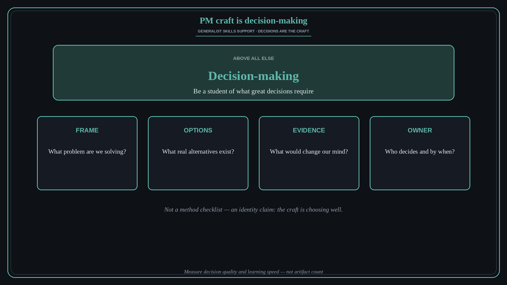

PM craft is decision-making
Source: Ryan Stein (@rmstein) via Lenny Rachitsky (@lennysan)
original post
What it claims
People say the PM’s main craft is doing lots of things pretty well. Somewhat true — but above all else, the craft is decision-making. Be students of what it takes to make great decisions. This is an identity claim for the role, not a step-by-step decision method.
Why it matters for a PO
POs get evaluated on facilitation, docs, and ceremony fluency. Those are supporting skills. The job is repeatedly choosing what to build, what to kill, and what to wait on — under incomplete information. Study decision quality the way engineers study systems design.
3 takeaways
- Treat decision-making as the core craft, not a side effect of being a generalist.
- Study what great decisions need: framing, options, evidence, and a clear owner.
- Measure yourself on decision quality and learning speed — not artifact count.
Practice this week
Pick one live decision. Write: frame, options considered, evidence used, decision owner, and how you will know in 30 days if it was good. Keep that note as your craft practice, not just a status update.